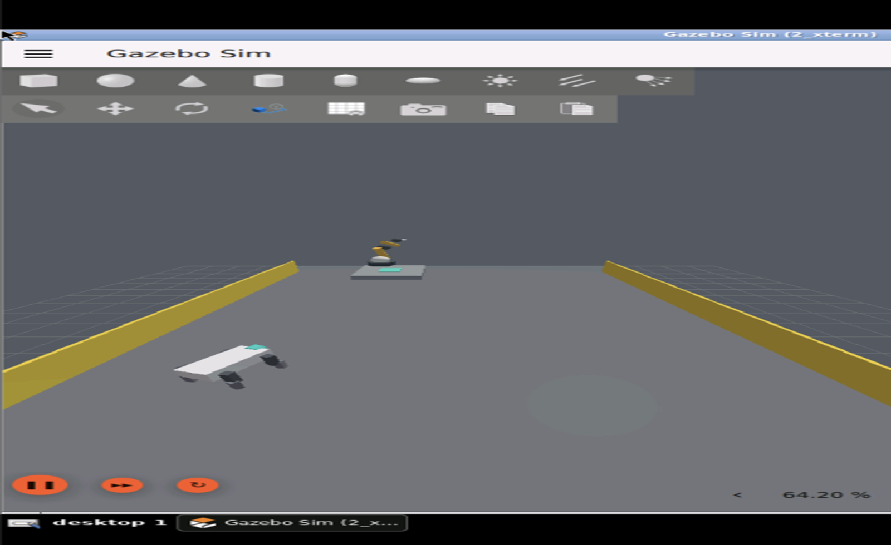

Universal Machine Protocol
Robots from different systems.
One shared operational picture.
UMP lets machines publish what they are doing, what they intend to do, and whether they are ready to collaborate.
Mobile robot
→
UMP shared state
←
Inspection robot
←
Robot arm
This is not a robot controller. It is the communication and coordination layer between them.
UMP Mixed Fleet Demo
01 / TRANSPORT

The Construct · Gazebo simulation
AMR carries payload
Shared robot state
● LIVE
mobile-1EXECUTING
capabilitytransportbattery82%healthhealthyposex -6.0 · y -2.0
inspector-1READY
battery76%healthhealthy
authority lease verified
assignment accepted by robot
correlation: transfer-001
What UMP exposes: identity · activity · intent · progress · pose · health · battery
UMP validates authority, then the robot accepts and executes its own transport capability.
UMP Mixed Fleet Demo
02 / INSPECT
The Construct · Gazebo simulation
Destination inspection
Shared robot state
● LIVE
inspector-1INSPECTING
capabilityinspectbattery76%healthhealthyresultworkcell ready
freshness: current
frame: warehouse/map
readiness published to fleet
No guessed telemetry: missing values remain unknown and are never invented.
Every connected participant can now see that the destination is healthy, inspected, and ready.
UMP Mixed Fleet Demo
03 / PLACE
The Construct · Gazebo simulation
Arm places payload
Dependency gate
VALIDATED
✓ transport succeeded
✓ inspection succeeded
✓ authority lease valid
manipulator-1PLACING
capabilityplacebatteryunknownhealthhealthyprogress0 → 100%
native controller accepted
bounded assignment active
terminal outcome recorded
Safety boundary: UMP never bypasses the robot's native controller or emergency systems.
Only after both dependencies succeed does UMP release the bounded placement assignment.
The result
3
robot classes coordinated through one protocol
State shared in real time
Authority verified
Dependencies enforced
Outcomes traceable
UMP coordinates. Robots remain in control.
Hardware adapters use the same contract demonstrated by this Gazebo software simulation.
One common language for robots to understand what the rest of the fleet is doing.